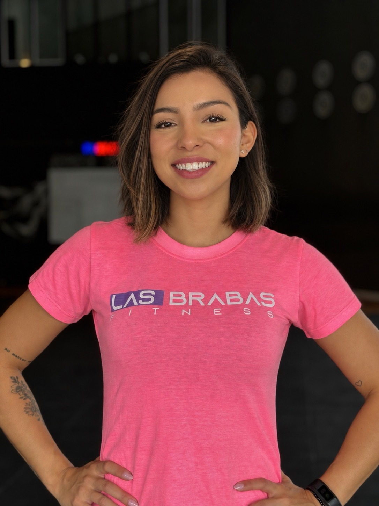
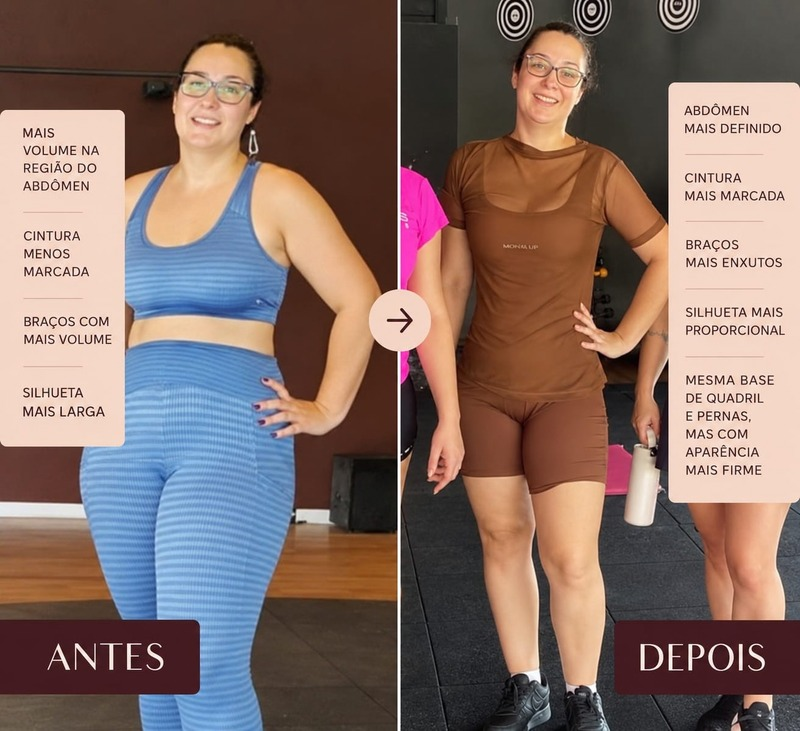
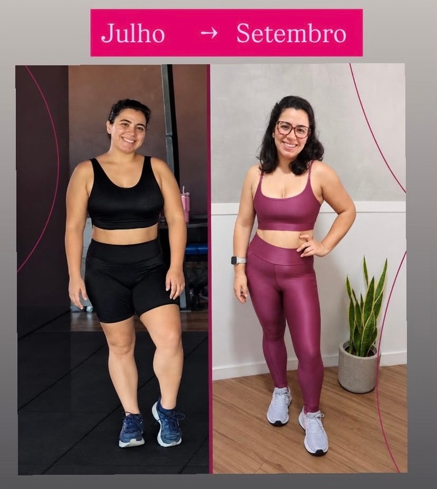
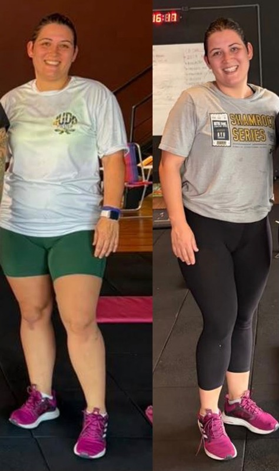
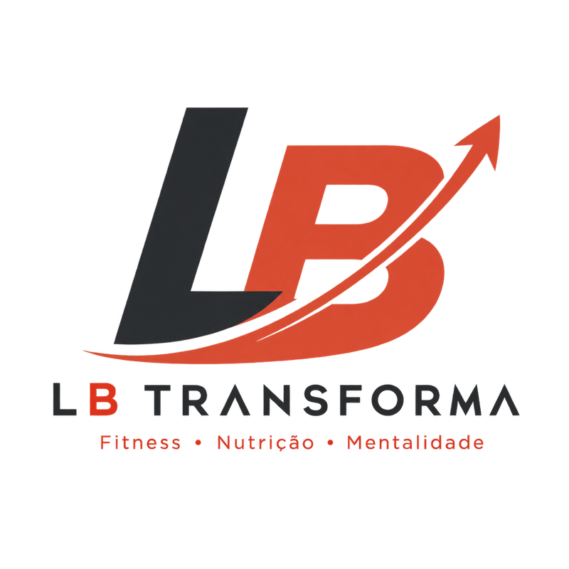

Acompanhamento próximo para mulheres
90 dias para transformar seu corpo e construir constância.
Treinos, encontros ao vivo e uma comunidade de mulheres para ajudar você a sair do ciclo de começar e parar.
Uma conversa para entender seu momento, apresentar como funciona o acompanhamento e explicar as opções de investimento.
Com Bárbara Midorisua Personal Trainer ao longo dessa jornada.
A vida real acontece
Quando a rotina muda, quem te ajuda a continuar?
Você começa motivada. Mas vem uma semana corrida, um treino perdido, uma mudança de horários. Sem orientação para reorganizar o caminho, o treino vai ficando para depois.
E você sente que precisa começar tudo de novo.
Depois de cinco anos trabalhando exclusivamente com mulheres de diferentes idades, níveis de condicionamento e fases da vida, percebi uma dificuldade que se repete: falta alguém por perto para ouvir, orientar e recalcular a rotina de treinos quando necessário.
Foi dessa escuta que nasceu o
Transforma
Fitness ✦ Nutrição ✦ Mentalidade
dias com a Bárbara ao seu lado, do primeiro treino ao último ajuste.
Uma transformação construída com você.
O LB TRANSFORMA é um programa de 90 dias para trabalhar sua transformação física com método, acompanhamento próximo e estratégias que consideram a sua vida real.
Você traz seu objetivo, suas dificuldades e suas conquistas. Juntas, organizamos os próximos passos para construir uma rotina de treinos que você consiga sustentar.
O acompanhamento ganha forma na sua semana.
-
Toda semana
2 encontros online e ao vivo
Em um, o tema da semana e breathwork. No outro, dúvidas e respostas ao vivo.
-
No aplicativo
Treinos no aplicativo
Treinos organizados no app, com vídeos e explicações para orientar a execução de cada exercício.
-
Nutrição
Plano alimentar personalizado
Elaborado pela nutricionista Natália Alarcon.
-
WhatsApp
Comunidade exclusiva
Um grupo exclusivo no WhatsApp para a comunidade do programa.
-
Presencial
Eventos presenciais exclusivos
Para a comunidade, no CT Las Brabas Fitness, em São José dos Campos.
Tudo isso com acompanhamento de perto, durante 90 dias.
Quero agendar minha consultoria gratuitaA diferença está no acompanhamento
O acompanhamento continua depois que você recebe o treino.
Ter uma programação é uma parte do processo. Conseguir colocá-la em prática, semana após semana, exige orientação e ajustes.
Os mesmos 90 dias, dois caminhosA semana corrida acontece nos dois. O que muda é o que vem depois.
- Sozinha: começa e para
- Com acompanhamento: ajusta e segue
Você participa. Eu acompanho. Juntas, ajustamos o caminho.
Como o acompanhamento acontece
-
Mentoria sobre desafios reais
Temas que ajudam a lidar com as dificuldades da rotina e a construir hábitos que apoiam os treinos.
-
Espaço para perguntar
Chamadas ao vivo para dúvidas e respostas, além de suporte pelo WhatsApp.
-
Escuta ativa e ajustes
Você compartilha as dificuldades e conquistas da semana, e a rotina de treinos é ajustada quando necessário.
-
Um ambiente que incentiva
O ambiente influencia o comportamento: aqui você convive com mulheres que também estão se comprometendo com a própria evolução.
Cada mulher tem um ponto de partida. Cada evolução tem uma história.
Rotinas diferentes, corpos diferentes, pontos de partida diferentes. Veja algumas evoluções de alunas que escolheram não caminhar sozinhas.



Os resultados são individuais e variam conforme as condições de cada participante e sua participação no processo.
Quero agendar minha consultoria gratuita
Quem vai estar com você em cada ajuste.
Sou fundadora e CEO do CT Las Brabas Fitness. Há cinco anos, trabalho exclusivamente com mulheres de diferentes idades, níveis de condicionamento e fases da vida.
Minha experiência me ensinou a olhar além do treino: entender a rotina, ouvir as dificuldades e orientar cada próximo passo faz parte do acompanhamento.
No LB TRANSFORMA, estarei com você nos encontros ao vivo, nas dúvidas e nos ajustes ao longo da jornada.
-
5 anos
trabalhando exclusivamente com mulheres
-
CEO
Fundadora e CEO do CT Las Brabas Fitness
-
2×
por semana, ao vivo com você
Método para orientar. Escuta para ajustar. Proximidade para acompanhar. Bárbara Midori
Um compromisso possível
Se você procura atalhos, o LB TRANSFORMA não é para você.
O programa não é para quem espera resultado sem participar do processo, nem para quem procura uma solução imediata que dispense compromisso.
- 01Resultado sem participar do processoNão é aqui
- 02Solução imediataNão é aqui
- 03Compromisso zeroNão é aqui
Aqui, o caminho é outro.
Trabalhamos com método, acompanhamento de perto e estratégias para você sair do ciclo de começar e parar.
É para você se…
- Você quer treinar com orientação, sem ficar sozinha tentando adivinhar o próximo passo.
- Você está disposta a compartilhar suas dificuldades com honestidade.
- Você quer assumir um compromisso possível com a própria evolução.
Você não precisa chegar com uma rotina perfeita. Precisa estar disposta a construí-la.
Quero agendar minha consultoria gratuitaTudo o que você precisa saber antes de começar.
Ficou alguma pergunta? Na consultoria gratuita você conversa direto com a Bárbara.
01Quanto tempo dura o programa?
O LB TRANSFORMA tem duração de 90 dias.
02Como recebo meus treinos?
Pelo aplicativo, com vídeos e explicações dos exercícios.
03Como funcionam os encontros?
São dois encontros online e ao vivo por semana, com orientação da personal, temas sobre desafios da jornada, espaço para dúvidas e prática de breathwork.
04Vou conseguir falar com a Bárbara?
Sim. Você terá contato com ela nos encontros ao vivo e suporte pelo WhatsApp.
05Minha rotina muda muito. O programa faz sentido para mim?
Esse é um dos pontos centrais do acompanhamento: entender suas dificuldades e ajustar a rotina de treinos quando necessário.
06Preciso morar em São José dos Campos?
Não. O acompanhamento acontece online. Os eventos presenciais são realizados no CT Las Brabas Fitness, em São José dos Campos.
Seu próximo começo pode ter acompanhamento.
Na consultoria gratuita, vamos entender seu momento, conversar sobre sua rotina e mostrar como o LB TRANSFORMA pode acompanhar sua evolução durante 90 dias.
Uma conversa para entender seu momento e explicar as opções de investimento.